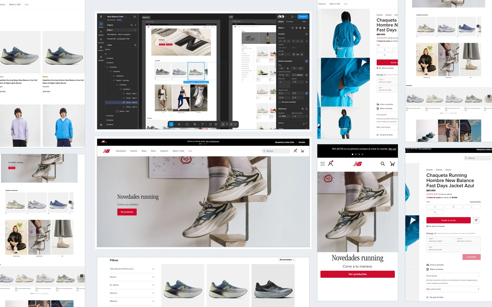
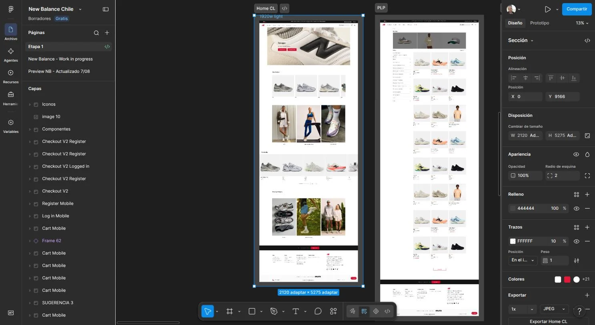
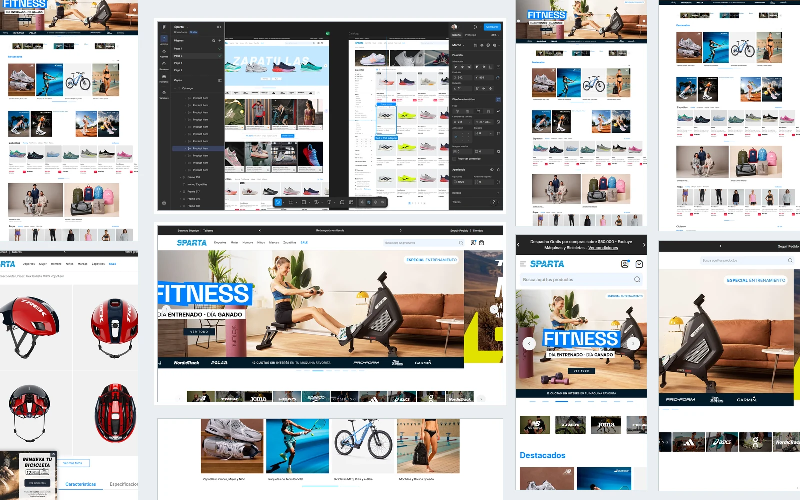
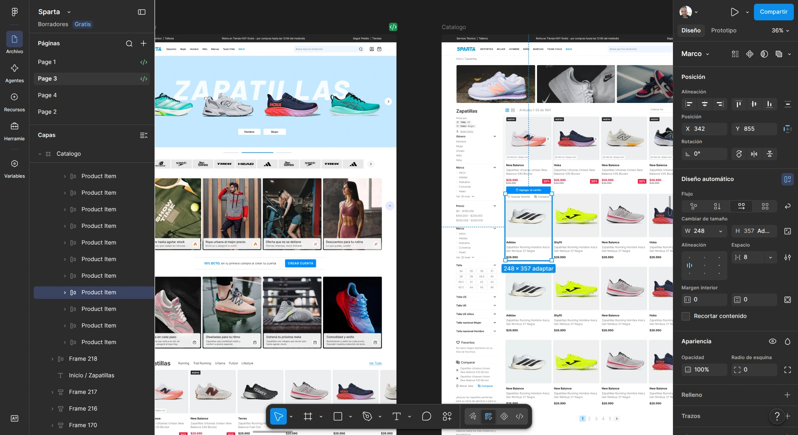

Cinco marcas, cinco identidades, un mismo sistema
UI kits como fuente única entre diseño y desarrollo: los componentes se definen una vez y las variantes se resuelven por marca, para cinco tiendas que se ven distintas.
- Contexto
- Sparta opera en Chile el retail deportivo de cinco marcas —Sparta, New Balance, Head, Speedo y Trek—. Cada una tiene su identidad, su público y su calendario comercial, pero todas corren sobre una base técnica compartida.
- El problema
- Diseñar cinco tiendas que se vean distintas entre sí, cada una fiel al manual de su marca, sin que la base común obligue a inventar todo de nuevo cada vez ni a que terminen pareciéndose.
- Qué hice
- Para New Balance Chile diseñé la interfaz completa en Figma; para Sparta diseñé parte de las páginas. Armé los UI kits de las tiendas, que quedaron como fuente única entre diseño y desarrollo: los componentes se definen una vez y se resuelven las variantes por marca, en lugar de rediseñar pantalla por pantalla. Después desarrollé yo mismo los dos themes, así que el diseño se validó contra la implementación real y no contra una maqueta.
- Resultado
- Dos tiendas en producción con identidades claramente distintas y un sistema de componentes que sostiene a las cinco.